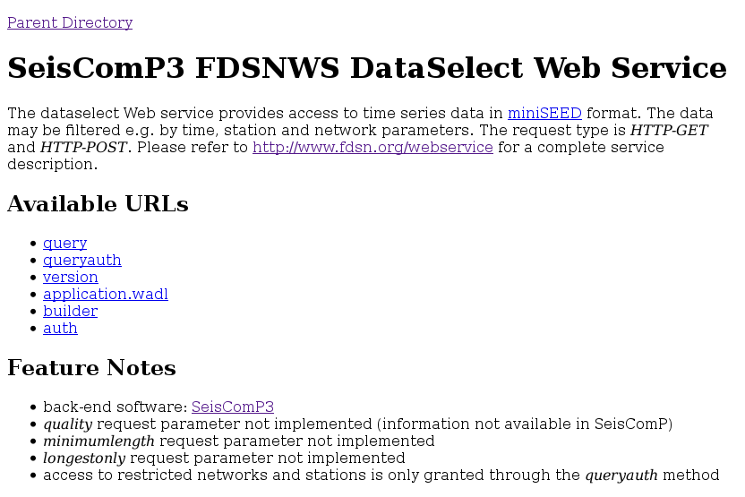

Enable local FDSNWS server¶
You will …
Enable FDSN web service 1 to serve waveforms and inventory for a configured station
Pre-requisites for this tutorial:
Tutorial on Set up local waveform archiving
Afterwards/Results/Outcomes:
The station meta data and waveforms are available from a local web server
Time range estimate:
10 minutes
By default, fdsnws will serve the three FDSN web services
fdsnws-dataselect
fdsnws-event
fdsnws-station
on a server running locally on port 8080.
The additional availability feature allows users to obtain information
on continuous data segments in the waveform archive.
This information is written to the
database by scardac.
To active the availability feature set serveAvailability and
dataAvailability.enable to true.
The availability information can be retrieved using scxmldump or fdsnws.
Set-up¶
Configure fdsnws:
set the RecordStream to point to archived data.
configured and enable the desired services.
Enable and start fdsnws locally:
in scconfig, go to the System tab. Click on the line for the “fdsnws” module, and press “Enable module(s)”. Then restart SeisComP.
or from the command line
$ seiscomp enable fdsnws $ seiscomp start fdsnws
Test by visiting the locally started fdsnws.
Logging information goes to ~/.seiscomp/log/fdsnws.log by default.
Information about requests handled goes to the file named in accessLog,
if you set this.
To see the available configuration options, go to the Modules tab in scconfig. Under Utilities open “fdsnws” to reveal the options. To disable fdsnws-event, for instance, unlock the “serveEvent” area and uncheck this parameter.
You can limit the choice of stations shared to be less than what is in your SeisComP inventory using the allowRestricted, dataSelectFilter and stationFilter options.
Visiting the service¶
Once fdsnws is running, you can visit the local web server that it runs. In your browser, visit http://localhost:8080/fdsnws/dataselect/1/

Information screen shown by fdsnws-dataselect at http://localhost:8080/fdsnws/dataselect/1/¶
Check it works¶
If you visit the URL http://localhost:8080/fdsnws/dataselect/1/version you should receive a version number string - currently 1.1.0.
To view all activated services visit http://localhost:8080/fdsnws/
The fdsnws-station service should give a list of networks configured and served by the service, e.g. visiting http://localhost:8080/fdsnws/station/1/query?level=network&format=text produces:
#Network|Description|StartTime|EndTime|TotalStations GE|GEOFON Program, GFZ Potsdam, Germany|1993-01-01T00:00:00||84
Omitting the format=text argument in the query string of the above URL results in the service returning a StationXML file.
Further information¶
The URL Builder at GEOFON 2 lets you fill out a form to tailor your request. The URL to use to make your request is displayed at the bottom of that page.
More example requests are at the FDSNWS description at GEOFON 3
The FDSN Web Services specification document 1 provides the technical documentation and examples.
Final tests¶
The station should now be visible when you query your local fdsnws instance. In your browser, visit http://localhost:8080/fdsnws/station/1/query?format=text to see a list of all channels available from your fdsnws server.
Request waveform data like this:
http://localhost:8080/fdsnws/dataselect/1/query?start=2020-01-01T01:01:01&end=2020-01-01T02:00:00
Don’t forget to adjust your start and end times to match the data actually present in your archive. The above example is just for the first hour of 2020.


{kind=link}
{kind=link}